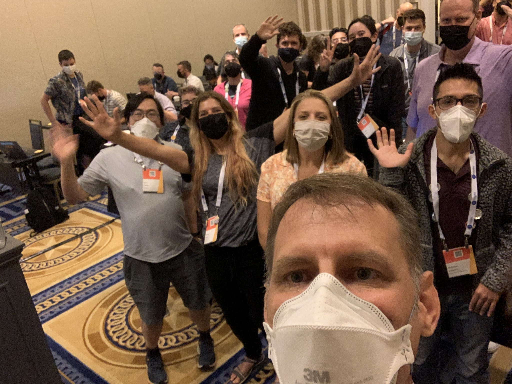
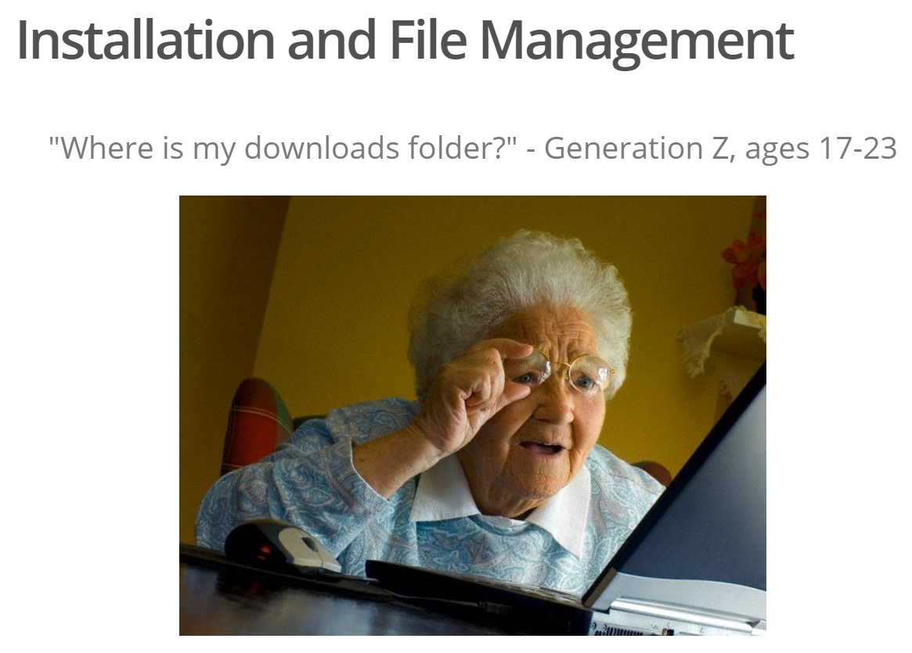
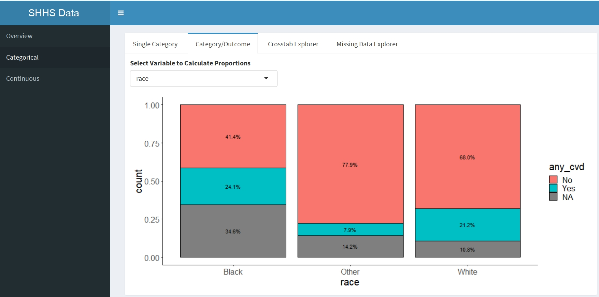
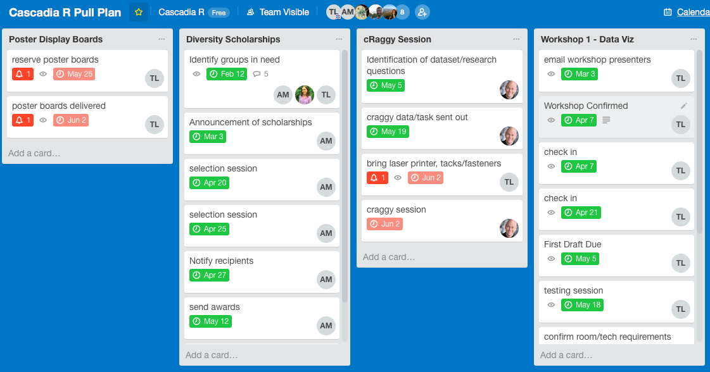
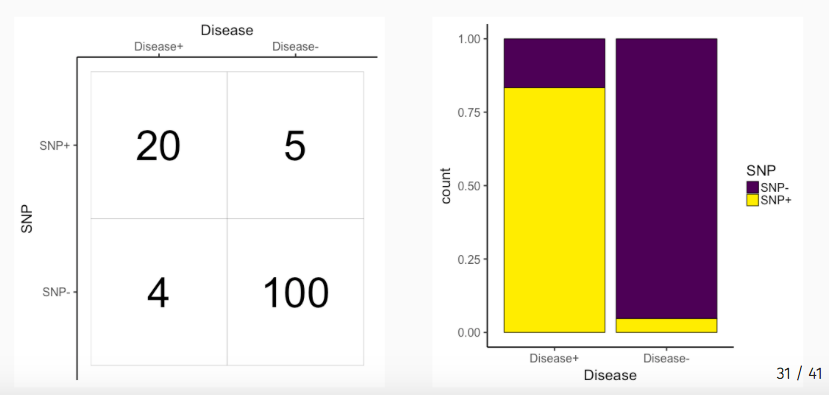

How the rules of comedy improv can improve your collaborations.
After 3 months leaving academia, how am I doing?
I’m leaving OHSU. The reasons why.
Reasons why I moved over to {distill} for my blog.
How saying no can be the best self-care.
Being overdrawn at the bank of kindness and self-care.
How I’m recovering from burnout.

Some notes about RStudioConf 2019.

More information about managing depression and anxiety.
Learning more about managing burnout.

More information about the 2018 Cascadia-R conference.
Why self-care is important in academia.
Are you an introvert? Here’s how to make conferences easier.
Links to my lectures for our HSMP410 course.

Notes on our preprint about synthetic clinical data.
Notes on the Evidence to Scholarship Conference at Reed College.
A talk about how system science and data science are connected.
An workshop introduction to Shiny
I get a lot of requests for informational interviews. Here’s how to actually get one.
A metaphor for understanding Tidy Evaluation
Some notes on ODSC West 2017.
useR 2017 talks and links.
A Past Workshop about EDA and data exploration.
How we started and ran the first PNW Regional R Conference, Cascadia-R
Why Learning and hobbies outside of your field are important.
A bit about BioData Club
Interesting interview with the developer of statcheck
More about somatic mutations in skin cancer.